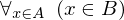

Show the Proof¶
In [1]:
import proveit
# Automation is not needed when only showing a stored proof:
proveit.defaults.automation = False # This will speed things up.
proveit.defaults.inline_pngs = False # Makes files smaller.
%show_proof
Out[1]:
| step type | requirements | statement | ||
|---|---|---|---|---|
| 0 | generalizaton | 1 | , ⊢ | |
| 1 | instantiation | 2, 3 | , ,  ⊢ ⊢ | |
 : : | ||||
| 2 | instantiation | 8, 4, 5 | ⊢ | |
 : , : ,  : : | ||||
| 3 | instantiation | 6, 7 | , ⊢  | |
| : | ||||
| 4 | assumption | ⊢ | ||
| 5 | instantiation | 11 | ⊢ | |
 : :  , : , :  | ||||
| 6 | instantiation | 8, 9, 10 | ⊢  | |
| : , : | ||||
| 7 | assumption | ⊢ | ||
| 8 | theorem | ⊢  | ||
| proveit.logic.equality.rhs_via_equality | ||||
| 9 | assumption | ⊢ | ||
| 10 | instantiation | 11 | ⊢  | |
| : , : | ||||
| 11 | axiom | ⊢  | ||
| proveit.logic.sets.inclusion.subset_eq_def | ||||